Systems of Measurement
Make Unit Conversions in the U.S. System
There are two systems of measurement commonly used around the world. Most countries use the metric system. The U.S. uses a different system of measurement, usually called the U.S. system. We will look at the U.S. system first.
The U.S. system of measurement uses units of inch, foot, yard, and mile to measure length and pound and ton to measure weight. For capacity, the units used are cup, pint, quart, and gallons. Both the U.S. system and the metric system measure time in seconds, minutes, and hours.
The equivalencies of measurements are shown in Table 1. The table also shows, in parentheses, the common abbreviations for each measurement.
| U.S. System of Measurement | |
|---|---|
In many real-life applications, we need to convert between units of measurement, such as feet and yards, minutes and seconds, quarts and gallons, etc. We will use the identity property of multiplication to do these conversions. We’ll restate the identity property of multiplication here for easy reference.
To use the identity property of multiplication, we write 1 in a form that will help us convert the units. For example, suppose we want to change inches to feet. We know that 1 foot is equal to 12 inches, so we will write 1 as the fraction When we multiply by this fraction we do not change the value, but just change the units.
But also equals 1. How do we decide whether to multiply by or We choose the fraction that will make the units we want to convert from divide out. Treat the unit words like factors and “divide out” common units like we do common factors. If we want to convert inches to feet, which multiplication will eliminate the inches?

The inches divide out and leave only feet. The second form does not have any units that will divide out and so will not help us.
How to Make Unit Conversions
MaryAnne is 66 inches tall. Convert her height into feet.
Solution
Solution
![A table is given with three columns. In the first column are directions. The second column has exposition, and the third column has the mathematical steps. In the first row, the direction is “Step 1. Multiply the measurement to be converted by; write as a fraction relating the units given and the units needed.” The exposition is “Multiply inches by, writing as a fraction relating inches and feet. We need inches in the denominator so that the inches will divide out!” The mathematical step is 66 inches times the fraction (1 foot) over (12 inches).](../../media/CNX_ElemAlg_Figure_01_10_017a_img_new.jpg)


When we use the identity property of multiplication to convert units, we need to make sure the units we want to change from will divide out. Usually this means we want the conversion fraction to have those units in the denominator.
Ndula, an elephant at the San Diego Safari Park, weighs almost 3.2 tons. Convert her weight to pounds.
Solution
Solution
| Multiply the measurement to be converted, by 1. | |
| Write 1 as a fraction relating tons and pounds. | |
| Simplify. | 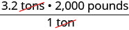 |
| Multiply. | |
| Ndula weighs almost 6,400 pounds. |
Sometimes, to convert from one unit to another, we may need to use several other units in between, so we will need to multiply several fractions.
Juliet is going with her family to their summer home. She will be away from her boyfriend for 9 weeks. Convert the time to minutes.
Solution
Solution
| 9 weeks | |
| Write as , , and . | |
| Divide out the common units. | 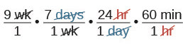 |
| Multiply. | |
| Multiply. |
Juliet and her boyfriend will be apart for 90,720 minutes (although it may seem like an eternity!).
How many ounces are in 1 gallon?
Solution
Solution
| 1 gallon | |
| Multiply the measurement to be converted by 1. | |
| Use conversion factors to get to the right unit. Simplify. |
 |
| Multiply. | |
| Simplify. |
There are 128 ounces in a gallon. |
Use Mixed Units of Measurement in the U.S. System
We often use mixed units of measurement in everyday situations. Suppose Joe is 5 feet 10 inches tall, stays at work for 7 hours and 45 minutes, and then eats a 1 pound 2 ounce steak for dinner—all these measurements have mixed units.
Performing arithmetic operations on measurements with mixed units of measures requires care. Be sure to add or subtract like units!
Seymour bought three steaks for a barbecue. Their weights were 14 ounces, 1 pound 2 ounces and 1 pound 6 ounces. How many total pounds of steak did he buy?
Solution
Solution
| Add the ounces. Then add the pounds. |  |
| Convert 22 ounces to pounds and ounces. | 2 pounds + 1 pound, 6 ounces |
| Add the pounds. | 3 pounds, 6 ounces |
| Seymour bought 3 pounds 6 ounces of steak. |
Anthony bought four planks of wood that were each 6 feet 4 inches long. What is the total length of the wood he purchased?
Solution
Solution
| Multiply the inches and then the feet. | 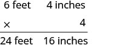 |
| Convert the 16 inches to feet. Add the feet. |
 |
| Anthony bought 25 feet and 4 inches of wood. |
Make Unit Conversions in the Metric System
In the metric system, units are related by powers of 10. The roots words of their names reflect this relation. For example, the basic unit for measuring length is a meter. One kilometer is 1,000 meters; the prefix kilo means thousand. One centimeter is of a meter, just like one cent is of one dollar.
The equivalencies of measurements in the metric system are shown in Table 7. The common abbreviations for each measurement are given in parentheses.
| Metric System of Measurement | ||
|---|---|---|
| Length | Mass | Capacity |
| 1 kilometer (km) = 1,000 m 1 hectometer (hm) = 100 m 1 dekameter (dam) = 10 m 1 meter (m) = 1 m 1 decimeter (dm) = 0.1 m 1 centimeter (cm) = 0.01 m 1 millimeter (mm) = 0.001 m |
1 kilogram (kg) = 1,000 g 1 hectogram (hg) = 100 g 1 dekagram (dag) = 10 g 1 gram (g) = 1 g 1 decigram (dg) = 0.1 g 1 centigram (cg) = 0.01 g 1 milligram (mg) = 0.001 g |
1 kiloliter (kL) = 1,000 L 1 hectoliter (hL) = 100 L 1 dekaliter (daL) = 10 L 1 liter (L) = 1 L 1 deciliter (dL) = 0.1 L 1 centiliter (cL) = 0.01 L 1 milliliter (mL) = 0.001 L |
| 1 meter = 100 centimeters 1 meter = 1,000 millimeters |
1 gram = 100 centigrams 1 gram = 1,000 milligrams |
1 liter = 100 centiliters 1 liter = 1,000 milliliters |
To make conversions in the metric system, we will use the same technique we did in the US system. Using the identity property of multiplication, we will multiply by a conversion factor of one to get to the correct units.
Have you ever run a 5K or 10K race? The length of those races are measured in kilometers. The metric system is commonly used in the United States when talking about the length of a race.
Nick ran a 10K race. How many meters did he run?
Solution
Solution
| 10 kilometers | |
| Multiply the measurement to be converted by 1. | |
| Write 1 as a fraction relating kilometers and meters. |  |
| Simplify. |  |
| Multiply. | 10,000 meters |
| Nick ran 10,000 meters. |
Eleanor’s newborn baby weighed 3,200 grams. How many kilograms did the baby weigh?
Solution
Solution
 |
|
| Multiply the measurement to be converted by 1. | |
| Write 1 as a function relating kilograms and grams. |  |
| Simplify. |  |
| Multiply. | |
| Divide. | 3.2 kilograms The baby weighed 3.2 kilograms. |
As you become familiar with the metric system you may see a pattern. Since the system is based on multiples of ten, the calculations involve multiplying by multiples of ten. We have learned how to simplify these calculations by just moving the decimal.
To multiply by 10, 100, or 1,000, we move the decimal to the right one, two, or three places, respectively. To multiply by 0.1, 0.01, or 0.001, we move the decimal to the left one, two, or three places, respectively.
We can apply this pattern when we make measurement conversions in the metric system. In Example 8, we changed 3,200 grams to kilograms by multiplying by (or 0.001). This is the same as moving the decimal three places to the left.

Convert ⓐ 350 L to kiloliters ⓑ 4.1 L to milliliters.
Solution
Solution
-
ⓐ We will convert liters to kiloliters. In Table 7, we see that
Multiply by 1, writing 1 as a fraction relating liters to kiloliters. Simplify. 
-
ⓑ We will convert liters to milliliters. From Table 7 we see that

Multiply by 1, writing 1 as a fraction relating liters to milliliters. 
Simplify. 
Move the decimal 3 units to the right. 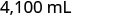
Use Mixed Units of Measurement in the Metric System
Performing arithmetic operations on measurements with mixed units of measures in the metric system requires the same care we used in the US system. But it may be easier because of the relation of the units to the powers of 10. Make sure to add or subtract like units.
Ryland is 1.6 meters tall. His younger brother is 85 centimeters tall. How much taller is Ryland than his younger brother?
Solution
Solution
We can convert both measurements to either centimeters or meters. Since meters is the larger unit, we will subtract the lengths in meters. We convert 85 centimeters to meters by moving the decimal 2 places to the left.
| Write the 85 centimeters as meters. |
Ryland is taller than his brother.
Dena’s recipe for lentil soup calls for 150 milliliters of olive oil. Dena wants to triple the recipe. How many liters of olive oil will she need?
Solution
Solution
We will find the amount of olive oil in millileters then convert to liters.
| Triple | |
| Translate to algebra. | |
| Multiply. | |
| Convert to liters. | |
| Simplify. | |
| Dena needs 0.45 liters of olive oil. |
Convert Between the U.S. and the Metric Systems of Measurement
Many measurements in the United States are made in metric units. Our soda may come in 2-liter bottles, our calcium may come in 500-mg capsules, and we may run a 5K race. To work easily in both systems, we need to be able to convert between the two systems.
Table 14 shows some of the most common conversions.
| Conversion Factors Between U.S. and Metric Systems | ||
|---|---|---|
| Length | Mass | Capacity |
Figure 1 shows how inches and centimeters are related on a ruler.
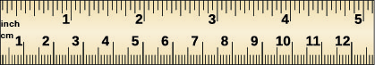
Figure 2 shows the ounce and milliliter markings on a measuring cup.

Figure 3 shows how pounds and kilograms marked on a bathroom scale.
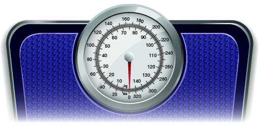
We make conversions between the systems just as we do within the systems—by multiplying by unit conversion factors.
Lee’s water bottle holds 500 mL of water. How many ounces are in the bottle? Round to the nearest tenth of an ounce.
Solution
Solution
| Multiply by a unit conversion factor relating mL and ounces. | |
| Simplify. | |
| Divide. | |
| The water bottle has 16.7 ounces. |
Soleil was on a road trip and saw a sign that said the next rest stop was in 100 kilometers. How many miles until the next rest stop?
Solution
Solution
| Multiply by a unit conversion factor relating km and mi. | |
| Simplify. | |
| Divide. | |
| Soleil will travel 62 miles. |
Convert between Fahrenheit and Celsius Temperatures
Have you ever been in a foreign country and heard the weather forecast? If the forecast is for what does that mean?
The U.S. and metric systems use different scales to measure temperature. The U.S. system uses degrees Fahrenheit, written The metric system uses degrees Celsius, written Figure 4 shows the relationship between the two systems.

Convert Fahrenheit into degrees Celsius.
Solution
Solution
 |
|
 |
 |
| Simplify in parentheses. | 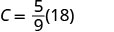 |
| Multiply. |  |
| So we found that 50°F is equivalent to 10°C. |
While visiting Paris, Woody saw the temperature was Celsius. Convert the temperature into degrees Fahrenheit.
Solution
Solution
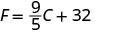 |
|
 |
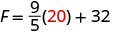 |
| Multiply. |  |
| Add. |  |
| So we found that 20°C is equivalent to 68°F. |
Key Concepts
-
Metric System of Measurement
-
Length
-
Mass
-
Capacity
-
Length
-
Temperature Conversion
- To convert from Fahrenheit temperature, F, to Celsius temperature, C, use the formula
- To convert from Celsius temperature, C, to Fahrenheit temperature, F, use the formula
Section Exercises
Practice Makes Perfect
Make Unit Conversions in the U.S. System
In the following exercises, convert the units.
A park bench is 6 feet long. Convert the length to inches.
Solution
72 inches
A floor tile is 2 feet wide. Convert the width to inches.
A ribbon is 18 inches long. Convert the length to feet.
Solution
1.5 feet
Carson is 45 inches tall. Convert his height to feet.
A football field is 160 feet wide. Convert the width to yards.
Solution
yards
On a baseball diamond, the distance from home plate to first base is 30 yards. Convert the distance to feet.
Ulises lives 1.5 miles from school. Convert the distance to feet.
Solution
7,920 feet
Denver, Colorado, is 5,183 feet above sea level. Convert the height to miles.
A killer whale weighs 4.6 tons. Convert the weight to pounds.
Solution
9,200 pounds
Blue whales can weigh as much as 150 tons. Convert the weight to pounds.
An empty bus weighs 35,000 pounds. Convert the weight to tons.
Solution
tons
At take-off, an airplane weighs 220,000 pounds. Convert the weight to tons.
Rocco waited hours for his appointment. Convert the time to seconds.
Solution
5,400 s
Misty’s surgery lasted hours. Convert the time to seconds.
How many teaspoons are in a pint?
Solution
teaspoons
How many tablespoons are in a gallon?
JJ’s cat, Posy, weighs 14 pounds. Convert her weight to ounces.
Solution
ounces
April’s dog, Beans, weighs 8 pounds. Convert his weight to ounces.
Crista will serve 20 cups of juice at her son’s party. Convert the volume to gallons.
Solution
gallons
Lance needs 50 cups of water for the runners in a race. Convert the volume to gallons.
Jon is 6 feet 4 inches tall. Convert his height to inches.
Solution
76 in.
Faye is 4 feet 10 inches tall. Convert her height to inches.
The voyage of the Mayflower took 2 months and 5 days. Convert the time to days.
Solution
65 days
Lynn’s cruise lasted 6 days and 18 hours. Convert the time to hours.
Baby Preston weighed 7 pounds 3 ounces at birth. Convert his weight to ounces.
Solution
115 ounces
Baby Audrey weighted 6 pounds 15 ounces at birth. Convert her weight to ounces.
Use Mixed Units of Measurement in the U.S. System
In the following exercises, solve.
Eli caught three fish. The weights of the fish were 2 pounds 4 ounces, 1 pound 11 ounces, and 4 pounds 14 ounces. What was the total weight of the three fish?
Solution
8 lbs. 13 oz.
Judy bought 1 pound 6 ounces of almonds, 2 pounds 3 ounces of walnuts, and 8 ounces of cashews. How many pounds of nuts did Judy buy?
One day Anya kept track of the number of minutes she spent driving. She recorded 45, 10, 8, 65, 20, and 35. How many hours did Anya spend driving?
Solution
3.05 hours
Last year Eric went on 6 business trips. The number of days of each was 5, 2, 8, 12, 6, and 3. How many weeks did Eric spend on business trips last year?
Renee attached a 6 feet 6 inch extension cord to her computer’s 3 feet 8 inch power cord. What was the total length of the cords?
Solution
10 ft. 2 in.
Fawzi’s SUV is 6 feet 4 inches tall. If he puts a 2 feet 10 inch box on top of his SUV, what is the total height of the SUV and the box?
Leilani wants to make 8 placemats. For each placemat she needs 18 inches of fabric. How many yards of fabric will she need for the 8 placemats?
Solution
4 yards
Mireille needs to cut 24 inches of ribbon for each of the 12 girls in her dance class. How many yards of ribbon will she need altogether?
Make Unit Conversions in the Metric System
In the following exercises, convert the units.
Ghalib ran 5 kilometers. Convert the length to meters.
Solution
5,000 meters
Kitaka hiked 8 kilometers. Convert the length to meters.
Estrella is 1.55 meters tall. Convert her height to centimeters.
Solution
155 centimeters
The width of the wading pool is 2.45 meters. Convert the width to centimeters.
Mount Whitney is 3,072 meters tall. Convert the height to kilometers.
Solution
3.072 kilometers
The depth of the Mariana Trench is 10,911 meters. Convert the depth to kilometers.
June’s multivitamin contains 1,500 milligrams of calcium. Convert this to grams.
Solution
1.5 grams
A typical ruby-throated hummingbird weights 3 grams. Convert this to milligrams.
One stick of butter contains 91.6 grams of fat. Convert this to milligrams.
Solution
91,600 milligrams
One serving of gourmet ice cream has 25 grams of fat. Convert this to milligrams.
The maximum mass of an airmail letter is 2 kilograms. Convert this to grams.
Solution
2,000 grams
Dimitri’s daughter weighed 3.8 kilograms at birth. Convert this to grams.
A bottle of wine contained 750 milliliters. Convert this to liters.
Solution
0.75 liters
A bottle of medicine contained 300 milliliters. Convert this to liters.
Use Mixed Units of Measurement in the Metric System
In the following exercises, solve.
Matthias is 1.8 meters tall. His son is 89 centimeters tall. How much taller is Matthias than his son?
Solution
91 centimeters
Stavros is 1.6 meters tall. His sister is 95 centimeters tall. How much taller is Stavros than his sister?
A typical dove weighs 345 grams. A typical duck weighs 1.2 kilograms. What is the difference, in grams, of the weights of a duck and a dove?
Solution
855 grams
Concetta had a 2-kilogram bag of flour. She used 180 grams of flour to make biscotti. How many kilograms of flour are left in the bag?
Harry mailed 5 packages that weighed 420 grams each. What was the total weight of the packages in kilograms?
Solution
2.1 kilograms
One glass of orange juice provides 560 milligrams of potassium. Linda drinks one glass of orange juice every morning. How many grams of potassium does Linda get from her orange juice in 30 days?
Jonas drinks 200 milliliters of water 8 times a day. How many liters of water does Jonas drink in a day?
Solution
1.6 liters
One serving of whole grain sandwich bread provides 6 grams of protein. How many milligrams of protein are provided by 7 servings of whole grain sandwich bread?
Convert Between the U.S. and the Metric Systems of Measurement
In the following exercises, make the unit conversions. Round to the nearest tenth.
Bill is 75 inches tall. Convert his height to centimeters.
Solution
190.5 centimeters
Frankie is 42 inches tall. Convert his height to centimeters.
Marcus passed a football 24 yards. Convert the pass length to meters
Solution
21.9 meters
Connie bought 9 yards of fabric to make drapes. Convert the fabric length to meters.
Each American throws out an average of 1,650 pounds of garbage per year. Convert this weight to kilograms.
Solution
750 kilograms
An average American will throw away 90,000 pounds of trash over his or her lifetime. Convert this weight to kilograms.
A 5K run is 5 kilometers long. Convert this length to miles.
Solution
3.1 miles
Kathryn is 1.6 meters tall. Convert her height to feet.
Dawn’s suitcase weighed 20 kilograms. Convert the weight to pounds.
Solution
44 pounds
Jackson’s backpack weighed 15 kilograms. Convert the weight to pounds.
Ozzie put 14 gallons of gas in his truck. Convert the volume to liters.
Solution
53.2 liters
Bernard bought 8 gallons of paint. Convert the volume to liters.
Convert between Fahrenheit and Celsius Temperatures
In the following exercises, convert the Fahrenheit temperatures to degrees Celsius. Round to the nearest tenth.
Fahrenheit
Solution
Fahrenheit
Fahrenheit
Solution
Fahrenheit
Fahrenheit
Solution
Fahrenheit
Fahrenheit
Solution
Fahrenheit
In the following exercises, convert the Celsius temperatures to degrees Fahrenheit. Round to the nearest tenth.
Celsius
Solution
Celsius
Celsius
Solution
Celsius
Celsius
Solution
Celsius
Celsius
Solution
Celsius
Everyday Math
Nutrition Julian drinks one can of soda every day. Each can of soda contains 40 grams of sugar. How many kilograms of sugar does Julian get from soda in 1 year?
Solution
14.6 kilograms
Reflectors The reflectors in each lane-marking stripe on a highway are spaced 16 yards apart. How many reflectors are needed for a one mile long lane-marking stripe?
Writing Exercises
Some people think that Fahrenheit is the ideal temperature range.
- ⓐ What is your ideal temperature range? Why do you think so?
- ⓑ Convert your ideal temperatures from Fahrenheit to Celsius.
Solution
Answers may vary.
- ⓐ Did you grow up using the U.S. or the metric system of measurement?
- ⓑ Describe two examples in your life when you had to convert between the two systems of measurement.
Self Check
ⓐ After completing the exercises, use this checklist to evaluate your mastery of the objectives of this section.
![This is a table that has seven rows and four columns. In the first row, which is a header row, the cells read from left to right “I can…,” “Confidently,” “With some help,” and “No-I don’t get it!” The first column below “I can…” reads “define US units of measurement and convert from one unit to another,” “use US units of measurement,” “define metric units of measurement and convert from one unit to another,” “use metric units of measurement,” “convert between the US and the metric system of measurement,” and “convert between Fahrenheit and Celsius temperatures.” The rest of the cells are blank.](../../media/CNX_ElemAlg_Figure_01_10_201_img_new.jpg)
ⓑ Overall, after looking at the checklist, do you think you are well-prepared for the next Chapter? Why or why not?
Chapter Review Exercises
Introduction to Whole Numbers
Use Place Value with Whole Number
In the following exercises find the place value of each digit.
26,915
ⓐ 1 ⓑ 2 ⓒ 9 ⓓ 5 ⓔ 6
Solution
ⓐ tens ⓑ ten thousands ⓒ hundreds ⓓ ones ⓔ thousands
359,417
ⓐ 9 ⓑ 3 ⓒ 4 ⓓ 7 ⓔ 1
58,129,304
ⓐ 5 ⓑ 0 ⓒ 1 ⓓ 8 ⓔ 2
Solution
ⓐ ten millions ⓑ tens ⓒ hundred thousands ⓓ millions ⓔ ten thousands
9,430,286,157
ⓐ 6 ⓑ 4 ⓒ 9 ⓓ 0 ⓔ 5
In the following exercises, name each number.
6,104
Solution
six thousand, one hundred four
493,068
3,975,284
Solution
three million, nine hundred seventy-five thousand, two hundred eighty-four
85,620,435
In the following exercises, write each number as a whole number using digits.
three hundred fifteen
Solution
sixty-five thousand, nine hundred twelve
ninety million, four hundred twenty-five thousand, sixteen
Solution
one billion, forty-three million, nine hundred twenty-two thousand, three hundred eleven
In the following exercises, round to the indicated place value.
Round to the nearest ten.
ⓐ 407 ⓑ 8,564
Solution
ⓐ ⓑ
Round to the nearest hundred.
ⓐ 25,846 ⓑ 25,864
In the following exercises, round each number to the nearest ⓐ hundred ⓑ thousand ⓒ ten thousand.
864,951
Solution
ⓐ ⓑ ⓒ
3,972,849
Identify Multiples and Factors
In the following exercises, use the divisibility tests to determine whether each number is divisible by 2, by 3, by 5, by 6, and by 10.
168
Solution
264
375
Solution
750
1430
Solution
1080
Find Prime Factorizations and Least Common Multiples
In the following exercises, find the prime factorization.
420
Solution
115
225
Solution
2475
1560
Solution
56
72
Solution
168
252
Solution
391
In the following exercises, find the least common multiple of the following numbers using the multiples method.
6,15
Solution
60, 75
In the following exercises, find the least common multiple of the following numbers using the prime factors method.
24, 30
Solution
120
70, 84
Use the Language of Algebra
Use Variables and Algebraic Symbols
In the following exercises, translate the following from algebra to English.
Solution
25 minus 7, the difference of twenty-five and seven
Solution
45 divided by 5, the quotient of forty-five and five
Solution
forty-two is greater than or equal to twenty-seven
Solution
3 is less than or equal to 20 divided by 4, three is less than or equal to the quotient of twenty and four
In the following exercises, determine if each is an expression or an equation.
Solution
expression
Simplify Expressions Using the Order of Operations
In the following exercises, simplify each expression.
Solution
243
In the following exercises, simplify
Solution
13
Solution
10
Solution
1681
Evaluate an Expression
In the following exercises, evaluate the following expressions.
when
Solution
34
when
when
Solution
81
when
when
Solution
58
when
Simplify Expressions by Combining Like Terms
In the following exercises, identify the coefficient of each term.
Solution
12
In the following exercises, identify the like terms.
Solution
In the following exercises, identify the terms in each expression.
Solution
In the following exercises, simplify the following expressions by combining like terms.
Solution
Solution
Solution
Translate an English Phrase to an Algebraic Expression
In the following exercises, translate the following phrases into algebraic expressions.
the sum of 8 and 12
Solution
the sum of 9 and 1
the difference of and 4
Solution
the difference of and 3
the product of 6 and
Solution
the product of 9 and
Adele bought a skirt and a blouse. The skirt cost $15 more than the blouse. Let represent the cost of the blouse. Write an expression for the cost of the skirt.
Solution
Marcella has 6 fewer boy cousins than girl cousins. Let represent the number of girl cousins. Write an expression for the number of boy cousins.
Add and Subtract Integers
Use Negatives and Opposites of Integers
In the following exercises, order each of the following pairs of numbers, using < or >.
ⓐ
ⓑ
ⓒ
ⓓ
Solution
ⓐ > ⓑ < ⓒ < ⓓ >
ⓐ
ⓑ
ⓒ
ⓓ
In the following exercises,, find the opposite of each number.
ⓐ ⓑ 1
Solution
ⓐ 8 ⓑ
ⓐ ⓑ
In the following exercises, simplify.
Solution
19
In the following exercises, simplify.
when
ⓐ
ⓑ
Solution
ⓐ ⓑ 3
when
ⓐ
ⓑ
Simplify Expressions with Absolute Value
In the following exercises,, simplify.
ⓐ ⓑ ⓒ
Solution
ⓐ 7 ⓑ 25 ⓒ 0
ⓐ ⓑ ⓒ
In the following exercises, fill in <, >, or = for each of the following pairs of numbers.
ⓐ
ⓑ
Solution
ⓐ < ⓑ =
ⓐ
ⓑ
In the following exercises, simplify.
Solution
4
Solution
80
In the following exercises, evaluate.
ⓐ when ⓑ when
Solution
ⓐ 28 ⓑ 15
ⓐ when
ⓑ when
Add Integers
In the following exercises, simplify each expression.
Solution
Solution
0
Solution
132
Subtract Integers
In the following exercises, simplify.
Solution
6
ⓐ ⓑ
Solution
ⓐ 9 ⓑ 9
ⓐ ⓑ
ⓐ ⓑ
Solution
ⓐ 17 ⓑ 17
ⓐ ⓑ
In the following exercises, simplify each expression.
Solution
29
Solution
Solution
Solution
18
Solution
Multiply Integers
In the following exercises, multiply.
Solution
Solution
Divide Integers
In the following exercises, divide.
Solution
Solution
6
Simplify Expressions with Integers
In the following exercises, simplify each expression.
Solution
43
Solution
Solution
Solution
Solution
55
Evaluate Variable Expressions with Integers
In the following exercises, evaluate each expression.
when ⓐ ⓑ
Solution
ⓐ ⓑ
when ⓐ ⓑ
When , evaluate:ⓐ ⓑ
Solution
ⓐ ⓑ 17
When , evaluate:
ⓐ >ⓑ
when
Solution
8
when
when and
Solution
38
when and
Translate English Phrases to Algebraic Expressions
In the following exercises, translate to an algebraic expression and simplify if possible.
the sum of and , increased by 32
Solution
ⓐ the difference of 15 and ⓑ subtract 15 from
the quotient of and
Solution
the product of and the difference of
Use Integers in Applications
In the following exercises, solve.
Temperature The high temperature one day in Miami Beach, Florida, was . That same day, the high temperature in Buffalo, New York was . What was the difference between the temperature in Miami Beach and the temperature in Buffalo?
Solution
84 degrees
Checking Account Adrianne has a balance of in her checking account. She deposits $301 to the account. What is the new balance?
Visualize Fractions
Find Equivalent Fractions
In the following exercises, find three fractions equivalent to the given fraction. Show your work, using figures or algebra.
Solution
answers may vary
Solution
answers may vary
Simplify Fractions
In the following exercises, simplify.
Solution
Solution
Solution
Solution
Multiply Fractions
In the following exercises, multiply.
Solution
Solution
Solution
Solution
Divide Fractions
In the following exercises, divide.
Solution
2
Solution
Solution
Solution
Solution
In the following exercises, simplify.
Solution
Solution
Solution
Simplify Expressions Written with a Fraction Bar
In the following exercises, simplify.
Solution
Solution
Solution
Solution
Solution
Solution
Translate Phrases to Expressions with Fractions
In the following exercises, translate each English phrase into an algebraic expression.
the quotient of c and the sum of d and 9.
Solution
the quotient of the difference of h and k, and .
Add and Subtract Fractions
Add and Subtract Fractions with a Common Denominator
In the following exercises, add.
Solution
Solution
Solution
In the following exercises, subtract.
Solution
Solution
Solution
Add or Subtract Fractions with Different Denominators
In the following exercises, add or subtract.
Solution
Solution
Solution
Solution
Solution
Solution
Use the Order of Operations to Simplify Complex Fractions
In the following exercises, simplify.
Solution
Solution
14
Evaluate Variable Expressions with Fractions
In the following exercises, evaluate.
when
ⓐ
ⓑ
Solution
ⓐ ⓑ 0
when
ⓐ
ⓑ
when and
Solution
when and
when
Solution
when
Decimals
Name and Write Decimals
In the following exercises, write as a decimal.
Eight and three hundredths
Solution
8.03
Nine and seven hundredths
One thousandth
Solution
0.001
Nine thousandths
In the following exercises, name each decimal.
7.8
Solution
seven and eight tenths
5.01
0.005
Solution
five thousandths
0.381
Round Decimals
In the following exercises, round each number to the nearest ⓐ hundredth ⓑ tenth ⓒ whole number.
5.7932
Solution
ⓐ 5.79 ⓑ 5.8 ⓒ 6
3.6284
12.4768
Solution
ⓐ 12.48 ⓑ 12.5 ⓒ 12
25.8449
Add and Subtract Decimals
In the following exercises, add or subtract.
Solution
27.73
Solution
−5.53
Solution
−13.5
Solution
35.8
Solution
42.51
Multiply and Divide Decimals
In the following exercises, multiply.
Solution
0.12
Solution
26.7528
Solution
2.2302
In the following exercises, divide.
Solution
0.03
Solution
$0.71
Solution
150
Convert Decimals, Fractions, and Percents
In the following exercises, write each decimal as a fraction.
0.08
Solution
0.17
0.425
Solution
0.184
1.75
Solution
0.035
In the following exercises, convert each fraction to a decimal.
Solution
0.4
Solution
Solution
Solution
7
In the following exercises, convert each percent to a decimal.
5%
Solution
0.05
9%
40%
Solution
0.4
50%
115%
Solution
1.15
125%
In the following exercises, convert each decimal to a percent.
0.18
Solution
18%
0.15
0.009
Solution
0.9%
0.008
1.5
Solution
150%
2.2
The Real Numbers
Simplify Expressions with Square Roots
In the following exercises, simplify.
Solution
8
Solution
−5
Identify Integers, Rational Numbers, Irrational Numbers, and Real Numbers
In the following exercises, write as the ratio of two integers.
ⓐ 9 ⓑ 8.47
Solution
ⓐ ⓑ
ⓐ ⓑ 3.591
In the following exercises, list the ⓐ rational numbers, ⓑ irrational numbers.
Solution
ⓐ ⓑ
In the following exercises, identify whether each number is rational or irrational.
ⓐ ⓑ
Solution
ⓐ rational ⓑ irrational
ⓐ ⓑ
In the following exercises, identify whether each number is a real number or not a real number.
ⓐ ⓑ
Solution
ⓐ not a real number ⓑ real number
ⓐ ⓑ
In the following exercises, list the ⓐ whole numbers, ⓑ integers, ⓒ rational numbers, ⓓ irrational numbers, ⓔ real numbers for each set of numbers.
Solution
ⓐ ⓑ ⓒ ⓓ ⓔ
Locate Fractions on the Number Line
In the following exercises, locate the numbers on a number line.
Solution
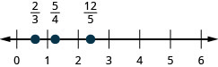
Solution

In the following exercises, order each of the following pairs of numbers, using < or >.
Solution
<
Solution
<
Locate Decimals on the Number Line
In the following exercises, locate on the number line.
Solution
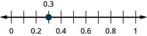
Solution

2.7
In the following exercises, order each of the following pairs of numbers, using < or >.
Solution
>
Solution
<
Properties of Real Numbers
Use the Commutative and Associative Properties
In the following exercises, use the Associative Property to simplify.
Solution
Solution
In the following exercises, simplify.
Solution
37
Solution
Solution
Solution
Use the Identity and Inverse Properties of Addition and Multiplication
In the following exercises, find the additive inverse of each number.
ⓐ
ⓑ
ⓒ
ⓓ
Solution
ⓐ ⓑ ⓒ 14 ⓓ
ⓐ
ⓑ
ⓒ
ⓓ
In the following exercises, find the multiplicative inverse of each number.
ⓐ 10 ⓑ ⓒ 0.6
Solution
ⓐ ⓑ ⓒ
ⓐ ⓑ ⓒ 2.1
Use the Properties of Zero
In the following exercises, simplify.
Solution
0
Solution
undefined
In the following exercises, simplify.
Solution
39
Solution
57
Solution
8
Simplify Expressions Using the Distributive Property
In the following exercises, simplify using the Distributive Property.
Solution
Solution
Solution
Solution
Systems of Measurement
1.1 Define U.S. Units of Measurement and Convert from One Unit to Another
In the following exercises, convert the units. Round to the nearest tenth.
A floral arbor is 7 feet tall. Convert the height to inches.
Solution
84 inches
A picture frame is 42 inches wide. Convert the width to feet.
Kelly is 5 feet 4 inches tall. Convert her height to inches.
Solution
64 inches
A playground is 45 feet wide. Convert the width to yards.
The height of Mount Shasta is 14,179 feet. Convert the height to miles.
Solution
2.7 miles
Shamu weights 4.5 tons. Convert the weight to pounds.
The play lasted hours. Convert the time to minutes.
Solution
105 minutes
How many tablespoons are in a quart?
Naomi’s baby weighed 5 pounds 14 ounces at birth. Convert the weight to ounces.
Solution
94 ounces
Trinh needs 30 cups of paint for her class art project. Convert the volume to gallons.
Use Mixed Units of Measurement in the U.S. System.
In the following exercises, solve.
John caught 4 lobsters. The weights of the lobsters were 1 pound 9 ounces, 1 pound 12 ounces, 4 pounds 2 ounces, and 2 pounds 15 ounces. What was the total weight of the lobsters?
Solution
10 lbs. 6 oz.
Every day last week Pedro recorded the number of minutes he spent reading. The number of minutes were 50, 25, 83, 45, 32, 60, 135. How many hours did Pedro spend reading?
Fouad is 6 feet 2 inches tall. If he stands on a rung of a ladder 8 feet 10 inches high, how high off the ground is the top of Fouad’s head?
Solution
15 feet
Dalila wants to make throw pillow covers. Each cover takes 30 inches of fabric. How many yards of fabric does she need for 4 covers?
Make Unit Conversions in the Metric System
In the following exercises, convert the units.
Donna is 1.7 meters tall. Convert her height to centimeters.
Solution
170 centimeters
Mount Everest is 8,850 meters tall. Convert the height to kilometers.
One cup of yogurt contains 488 milligrams of calcium. Convert this to grams.
Solution
0.488 grams
One cup of yogurt contains 13 grams of protein. Convert this to milligrams.
Sergio weighed 2.9 kilograms at birth. Convert this to grams.
Solution
2,900 grams
A bottle of water contained 650 milliliters. Convert this to liters.
Use Mixed Units of Measurement in the Metric System
In the following exerices, solve.
Minh is 2 meters tall. His daughter is 88 centimeters tall. How much taller is Minh than his daughter?
Solution
1.12 meter
Selma had a 1 liter bottle of water. If she drank 145 milliliters, how much water was left in the bottle?
One serving of cranberry juice contains 30 grams of sugar. How many kilograms of sugar are in 30 servings of cranberry juice?
Solution
0.9 kilograms
One ounce of tofu provided 2 grams of protein. How many milligrams of protein are provided by 5 ounces of tofu?
Convert between the U.S. and the Metric Systems of Measurement
In the following exercises, make the unit conversions. Round to the nearest tenth.
Majid is 69 inches tall. Convert his height to centimeters.
Solution
175.3 centimeters
A college basketball court is 84 feet long. Convert this length to meters.
Caroline walked 2.5 kilometers. Convert this length to miles.
Solution
1.6 miles
Lucas weighs 78 kilograms. Convert his weight to pounds.
Steve’s car holds 55 liters of gas. Convert this to gallons.
Solution
14.6 gallons
A box of books weighs 25 pounds. Convert the weight to kilograms.
Convert between Fahrenheit and Celsius Temperatures
In the following exercises, convert the Fahrenheit temperatures to degrees Celsius. Round to the nearest tenth.
95° Fahrenheit
Solution
35° C
23° Fahrenheit
20° Fahrenheit
Solution
–6.7° C
64° Fahrenheit
In the following exercises, convert the Celsius temperatures to degrees Fahrenheit. Round to the nearest tenth.
30° Celsius
Solution
86° F
–5° Celsius
–12° Celsius
Solution
10.4° F
24° Celsius
Chapter Practice Test
Write as a whole number using digits: two hundred five thousand, six hundred seventeen.
Solution
205,617
Find the prime factorization of 504.
Find the Least Common Multiple of 18 and 24.
Solution
72
Combine like terms:
In the following exercises, evaluate.
when
Solution
when
Translate to an algebraic expression and simplify: twenty less than negative 7.
Solution
Monique has a balance of in her checking account. She deposits $152 to the account. What is the new balance?
Round 677.1348 to the nearest hundredth.
Solution
677.13
Convert to a decimal.
Convert 1.85 to a percent.
Solution
185%
Locate on a number line.
In the following exercises, simplify each expression.
Solution
99
Solution
Solution
3
Solution
Solution
Solution
Solution
2.2365
Solution
Solution
Solution
undefined
A movie lasted hours. How many minutes did it last? (1 hour = 60 minutes)
Solution
100 minutes
Mike’s SUV is 5 feet 11 inches tall. He wants to put a rooftop cargo bag on the the SUV. The cargo bag is 1 foot 6 inches tall. What will the total height be of the SUV with the cargo bag on the roof? (1 foot = 12 inches)
Jennifer ran 2.8 miles. Convert this length to kilometers. (1 mile = 1.61 kilometers)
Solution
4.508 km